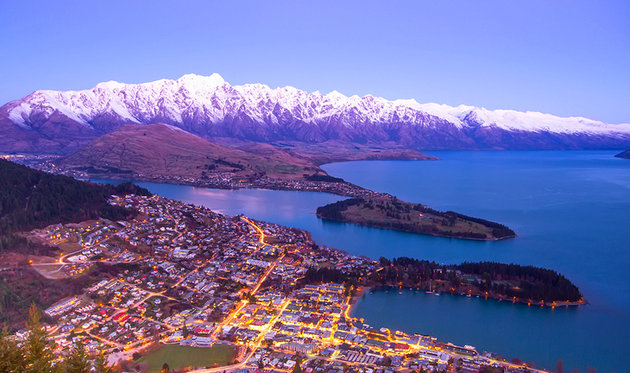

A World Heritage Site, Fiordland National Park protects some of the most spectacular scenery in the country. Glaciers sculpted this dramatic landscape carving the famous fjords of Milford, Dusky, and Doubtful Sounds. Visitors here can explore gushing cascades, offshore islands, virgin rainforests, vast lakes, and craggy mountain peaks. Not surprisingly, the park is a haven for hikers with some of the country's best walks, including the famous Milford Track. Sea kayaking is a popular way to explore the fjords, and visitors can also enjoy a scenic flight over the park for a bird's eye view of its staggering beauty.
A three-hour drive north of Auckland, the beautiful Bay of Islands is one of the most popular vacation destinations in the country. More than 144 islands dot the glittering bay making it a haven for sailing and yachting. Penguins, dolphins, whales, and marlin live in these fertile waters, and the region is a popular sport fishing spot. Visitors can sea kayak along the coast, hike the many island trails, bask in secluded coves, tour Cape Brett and the famous rock formation called Hole in the Rock, and explore sub-tropical forests where Kauri trees grow. The quaint towns in the area such as Russell, Opua, Paihia, and Kerikeri are great bases for exploring this scenic bay.

Snuggled between the shores of shimmering Lake Wakatipu and the snowy peaks of the Remarkables, Queenstown is New Zealand's adventure capital and one of the country's top destinations for international visitors. Bungee jumping, jet boating, white-water rafting, paragliding, rock climbing, mountain biking, and downhill skiing are just some of the adrenaline-fueled sports on offer, and visitors can explore the stunning alpine scenery on the excellent network of hiking trails. In addition to the adventure sports, Queenstown offers all the creature comforts with first-class hotels, spas, restaurants, galleries, and shops. It's also a great base for trips to the Central Otago region, where visitors can explore gold mining towns and the Middle Earth scenery from the popular "Lord of the Rings" movies.
In the center of the North Island, a few kilometers from glittering Lake Taupo, New Zealand's largest lake, Tongariro National Park is a dual World Heritage Site due to its spectacular volcanic features and its importance to the Maori culture. In 1887, Maori chief Te Heuheu Tukino IV gifted the volcanic peaks of Tongariro, Ngauruhoe, and part of Ruapehu to the people of New Zealand in order to preserve this sacred land. One of the oldest national parks in the world, Tongariro is a land of dramatic beauty with towering volcanoes, turquoise lakes, arid plateaus, alpine meadows, and hot springs. A highlight of the park is the Tongariro Alpine Crossing, one of the most popular day walks in the country.
On the tumultuous Pacific Ring of Fire, Rotorua is one of the most active geothermal regions in the world. This is a land where the earth speaks. Boiling mud pools, hissing geysers, volcanic craters, and steaming thermal springs betray the forces that birthed much of New Zealand's dramatic topography. Visitors can take a walking tour of these geothermal wonders, soak in steaming mineral springs, and learn about the region's rich Maori history and culture. Adventure seekers will also find plenty of things to do. Sky-diving, luging, and mountain biking are some of the activities on offer. Trout fishing is also popular, and Rotorua is the gateway to the ski fields of Mt. Ruapehu. Nearby Wai-O-Tapu is also a popular tourist attraction with colorful hot springs and the famous Champagne Pool and Lady Knox Geyser.
Among the most accessible glaciers in the world, Franz Josef and Fox glaciers are the main tourist attractions in spectacular Westland Tai Poutini National Park. Both of these rivers of ice flow from some of the highest peaks in the Southern Alps to near sea level where the gentle coastal climate makes it easy for visitors to explore them on foot. Guided hikes lead to the contorted frozen landscape of ice caves and pinnacles at the foot of the glaciers. For an aerial view, seaplanes and helicopters fly visitors to the top of these vast tongues of ice.